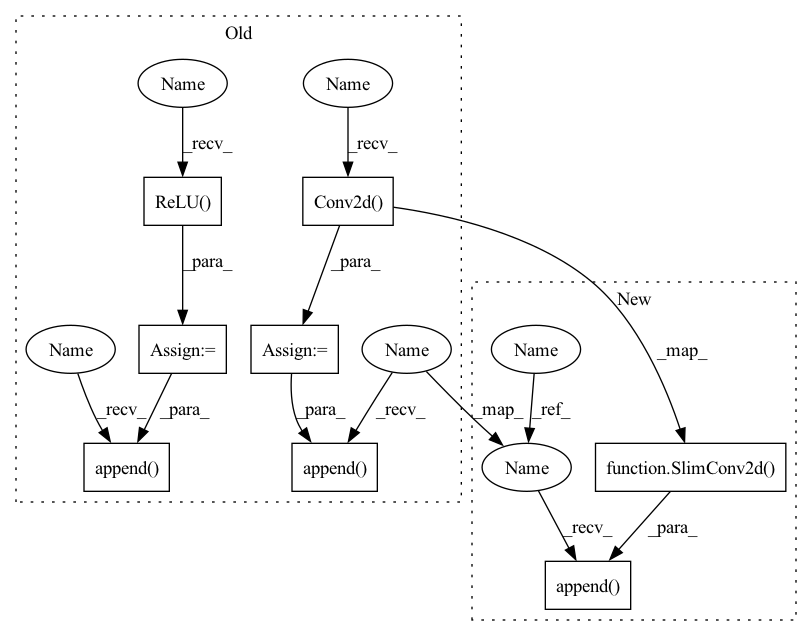

Pattern ID :1651

Before Change
elif "conv_layer" in self.custom_config["model_arch_args"]:
input_dim = obs_space.shape[2]
for i in range(self.custom_config["model_arch_args"]["conv_layer"]):
conv_f = nn.Conv2d(
in_channels=input_dim,
out_channels=self.custom_config["model_arch_args"]["out_channel_layer_{}".format(i)],
kernel_size=self.custom_config["model_arch_args"]["kernel_size_layer_{}".format(i)],
stride=self.custom_config["model_arch_args"]["stride_layer_{}".format(i)],
padding=self.custom_config["model_arch_args"]["padding_layer_{}".format(i)],
)
relu_f = nn.ReLU()
pool_f = nn.MaxPool2d(kernel_size=self.custom_config["model_arch_args"]["pool_size_layer_{}".format(i)])
layers.append(conv_f)
layers.append(relu_f)
layers.append(pool_f)
input_dim = self.custom_config["model_arch_args"]["out_channel_layer_{}".format(i)]
After Change
self.activation = model_config.get("fcnet_activation")
// encoder
layers = []
if "fc_layer" in self.custom_config["model_arch_args"]:
if "encode_layer" in self.custom_config["model_arch_args"]:
encode_layer = self.custom_config["model_arch_args"]["encode_layer"]
encoder_layer_dim = encode_layer.split("-")
encoder_layer_dim = [int(i) for i in encoder_layer_dim]
else: // default config
encoder_layer_dim = []
for i in range(self.custom_config["model_arch_args"]["fc_layer"]):
out_dim = self.custom_config["model_arch_args"]["out_dim_fc_{}".format(i)]
encoder_layer_dim.append(out_dim)
self.encoder_layer_dim = encoder_layer_dim
self.obs_size = self.full_obs_space.shape[0]
input_dim = self.obs_size
for out_dim in self.encoder_layer_dim:
layers.append(
SlimFC(in_size=input_dim,
out_size=out_dim,
initializer=normc_initializer(1.0),
activation_fn=self.activation))
input_dim = out_dim
elif "conv_layer" in self.custom_config["model_arch_args"]:
self.obs_size = self.full_obs_space.shape
input_dim = self.obs_size[2]
for i in range(self.custom_config["model_arch_args"]["conv_layer"]):
layers.append(
SlimConv2d(
in_channels=input_dim,
out_channels=self.custom_config["model_arch_args"]["out_channel_layer_{}".format(i)],
kernel=self.custom_config["model_arch_args"]["kernel_size_layer_{}".format(i)],
stride=self.custom_config["model_arch_args"]["stride_layer_{}".format(i)],
padding=self.custom_config["model_arch_args"]["padding_layer_{}".format(i)],
activation_fn=self.activation
)
)
pool_f = nn.MaxPool2d(kernel_size=self.custom_config["model_arch_args"]["pool_size_layer_{}".format(i)])
layers.append(pool_f)
input_dim = self.custom_config["model_arch_args"]["out_channel_layer_{}".format(i)]
In pattern: SUPERPATTERN
Frequency: 3
Non-data size: 8
Instances
Fragment ID: 3021652
Project Name: replicable-marl/marllib
Commit Name: 2d4a24632db3e3a2b79e668e480b40ec8052cf2a
Time: 2023-02-25
Author: hhhusiyi@163.com
File Name: marllib/marl/models/zoo/mlp/jointQ_mlp.py
Class Name: JointQ_MLP
Method Name: __init__
Parent Class: nn.Module,TorchModelV2
Fragment ID: 3021653
Project Name: replicable-marl/marllib
Commit Name: 2d4a24632db3e3a2b79e668e480b40ec8052cf2a
Time: 2023-02-25
Author: hhhusiyi@163.com
File Name: marllib/marl/models/zoo/rnn/jointQ_rnn.py
Class Name: JointQ_RNN
Method Name: __init__
Parent Class: nn.Module,TorchModelV2
Fragment ID: 3021651
Project Name: replicable-marl/marllib
Commit Name: e57bfc0294a4dcb84d3bf3af58153a6cc4ec84ec
Time: 2023-02-23
Author: hhhusiyi@163.com
File Name: marllib/marl/models/zoo/rnn/base_rnn.py
Class Name: Base_RNN
Method Name: __init__
Parent Class: TorchRNN,nn.Module